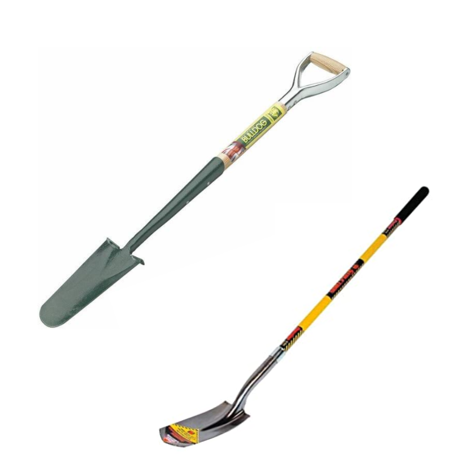

Info:
A tree planting shovel is used by someone who wants to dig a small and deep hole typically for planting
trees or other large plants.
A trench shovel is used by someone who wants to a dig a shallow and wide hole for planting numerous small
plants in a bed.
Tree and Trench shovel

Features:
A tree planting shovel has a thin, long, and curved head used for digging deep into the ground.
A trench shovel has a thing, long, curved, and angled head used for digging further into the side of a hole
to make it wider.